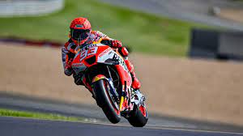
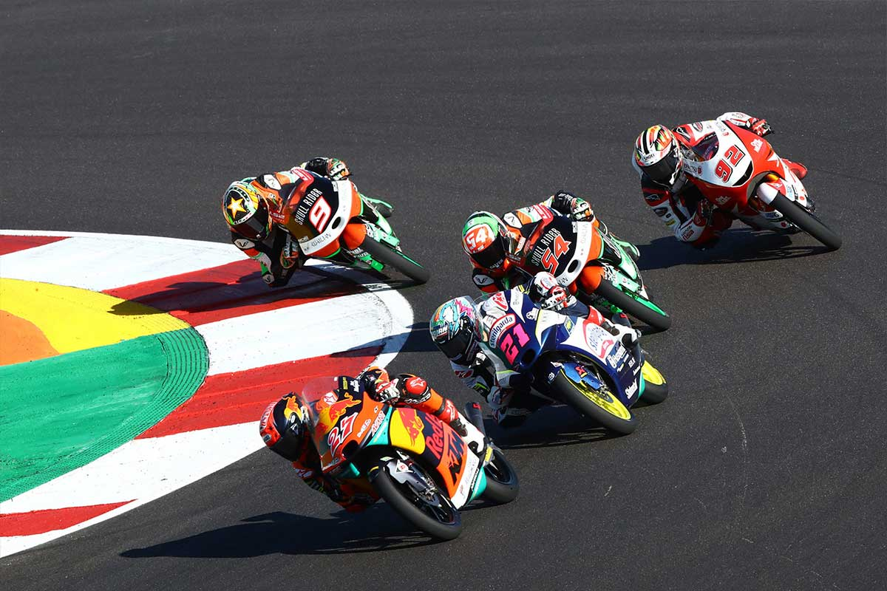
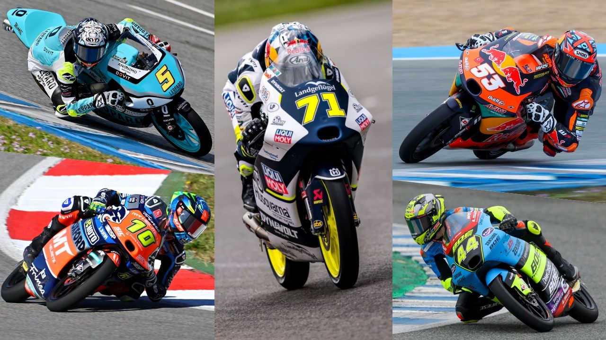

La categoría reina del motociclismo. Motos de 1000cc, más de 250 hp, velocidades superiores a 350 km/h. Aquí compiten los mejores pilotos del mundo.
La categoría intermedia. Motos con motores Triumph de 765cc, alrededor de 140 hp. Es la antesala directa a MotoGP.
La categoría ligera. Motos de 250cc 4T, con chasis pequeños y gran cantidad de jóvenes talentos. Es la puerta de entrada al Mundial.
La antigua categoría reina (1949–2001). De aquí nacieron leyendas como Agostini, Rainey, Schwantz, Doohan y Rossi.
Categoría intermedia histórica. Dominada por pilotos como Jorge Lorenzo, Dani Pedrosa y Max Biaggi antes de llegar a MotoGP.
La categoría ligera tradicional. De aquí surgieron Valentino Rossi, Marc Márquez y Casey Stoner.
Categorías pequeñas ya desaparecidas, populares en los años 70 y 80. Fueron la base del motociclismo de competición.
| Categoría | Cilindrada | Potencia aprox. | Velocidad máx. |
|---|---|---|---|
| MotoGP | 1000cc | 250+ hp | 350 km/h |
| Moto2 | 765cc | 140 hp | 300 km/h |
| Moto3 | 250cc | 60 hp | 240 km/h |
| MotoE | Eléctrica | 120 kW | 270 km/h |